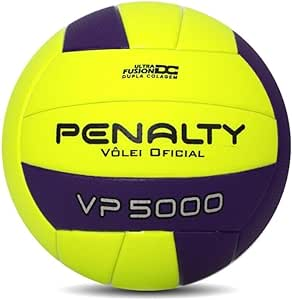

História do Vôlei
O vôlei foi inventado por William G. Morgan em 1895 nos Estados Unidos. Inicialmente, Morgan criou o esporte como uma alternativa ao basquete, tornando-o mais suave e acessível para jogar em ambientes fechados. O vôlei rapidamente ganhou popularidade e se espalhou por todo o mundo, tornando-se um esporte olímpico em 1964. Hoje, é jogado em nível amador e profissional em todo o planeta, com regras e técnicas refinadas ao longo dos anos.
Principais Regras do Vôlei
- O vôlei é jogado por duas equipes, com seis jogadores em cada lado da quadra.
- O objetivo é marcar pontos fazendo a bola tocar o chão do campo adversário.
- Cada equipe tem um número limitado de toques na bola antes de passá-la para o campo adversário.
- A bola deve ser batida sobre a rede, e a equipe adversária tenta impedir que ela toque o chão de seu lado.
- Um ponto é marcado sempre que a equipe adversária comete uma falta ou a bola cai no chão do seu lado.
- As rotações dos jogadores são feitas no sentido horário.
- Cada equipe pode solicitar dois tempos técnicos em cada set.
- O primeiro time a vencer três sets ganha o jogo, com exceção do quinto set, que vai até 15 pontos.
Produtos
-

Preço: R$ 139,90
Descrição: A Câmara 6D é um componente de alta qualidade para bolas de futebol. Possui um sistema de forro termofixo e é feita de material laminado PU, proporcionando maciez e conforto excepcionais. A camada Evacel melhora a durabilidade, e o miolo cápsula SIS mantém a retenção de ar ideal. Esta câmara é essencial para garantir o desempenho e a qualidade da sua bola de futebol.
-
Preço: R$90
Descrição: O conjunto de rede esportiva é uma opção conveniente, pois é leve, dobrável, portátil e prático. A rede é adequada para espaços pequenos e grandes, tornando-a versátil. É perfeita para jogar badminton, vôlei modificado, tênis, tênis de futebol e pickleball em locais como praia, garagem, quintais e qualquer área plana. Além disso, é uma escolha ideal para festas, acampamentos e férias em família, oferecendo diversão em uma variedade de situações.
-
Preço: R$70
Descrição: A Joelheira Indoor V Pt Penalty Preto é uma joelheira versátil e de alta qualidade projetada para esportes indoor. Oferece conforto e proteção, sendo ideal para atividades como futsal, vôlei e handebol. A marca Penalty assegura durabilidade e confiabilidade, tornando-a uma escolha excelente para proteger seus joelhos durante jogos e treinamentos intensos. Jogue com segurança e confiança com esta joelheira.